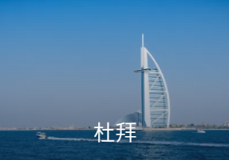

AUSTINZHENG.
TRIP.COM
旅遊
攻略
Travel
guide :
住宿
機票
高鐵 / 火車票
門票 / 體驗
機票+酒店
禮品卡
郵輪
旅遊保險
熱門目的地
Popular destinations
點擊相片即可查看:

熱門排行榜 :
宿霧50大必試美食
|
湛江50大必試美食
|
拉納普勒附近的五十大奢華酒店
|
雅典50大人氣景點
|
麥金格附近的五十大奢華酒店
|
桐鄉50大必試美食
|
漳州50大必試美食
|
濟南50大必試美食
|
圖瑞蒙戈附近的二十大奢華酒店
|
哈特福附近的五十大奢華酒店
|
羅馬50大人氣景點
|
鎮江50大必試美食
|
阿約斯-艾米列諾斯附近的五十大奢華酒店
|
河內50大人氣景點
|
石家莊50大必試美食
|
普拉託省附近的五十大奢華酒店
|
巴淡島50大必試美食
|
新加坡50大人氣景點
|
日內瓦20大人氣景點
|
南哥打巴託附近的熱門奢華酒店
|
馬爾法附近的五十大奢華酒店
|
曼徹斯特50大必試美食
|
澳門50大人氣景點
|
仰光熱門人氣景點
|
温州50大必試美食
|
釜山50大必試美食
|
馬德里50大人氣景點
|
檀香山50大人氣景點
|
格羅津斯基區附近的熱門豪華酒店
|
布達佩斯50大必試美食
熱門 Blog 網誌 :
【廈門天氣】2025廈門氣溫指南，最佳旅遊季節與穿衣搭配建議
|
【里斯本美食】2025里斯本美食餐廳盤點！附當地景點推薦
|
【佛山去珠海】2025珠海高鐵攻略：從佛山出發，輕鬆規劃珠海路線
|
【奈良天氣】奈良氣溫指南，最佳旅遊季節與穿衣搭配建議
|
【芭堤雅天氣】2025芭堤雅氣溫指南，探索芭堤雅最佳熱門景點及最新旅遊攻略
|
【普陀山天氣】2025普陀山氣溫指南，最佳旅遊季節與穿衣搭配建議
|
【景德鎮天氣】2025景德鎮氣溫指南，最佳景點與自由行攻略懶人包全面看！
|
【大邱去首爾】2025首爾火車旅行全攻略：從大邱出發，探索大邱美景
|
【紐約美食】2025紐約美食餐廳盤點！附當地景點推薦
|
【哈爾濱好去處】2025哈爾濱商場盤點！吃喝玩樂一應俱全
|
【麗江好去處】2025麗江商場盤點！吃喝玩樂一應俱全
|
【合肥自由行】3天2夜合肥旅遊這樣玩，行程規劃懶人包全面看！
|
【冰島好去處】2025冰島商場盤點！吃喝玩樂一應俱全
|
【夏威夷好去處】2025夏威夷商場盤點！吃喝玩樂一應俱全
|
【宿霧自由行】5天4夜宿霧旅遊這樣玩，行程規劃懶人包全面看！
|
【杭州去上海】2025上海高鐵攻略：從杭州出發，輕鬆規劃上海路線
|
【南寧好去處】2025南寧商場盤點！吃喝玩樂一應俱全
|
【羅湖到惠州】2025惠州高鐵旅行指南：從羅湖出發，輕鬆玩轉惠州
|
【騰衝好去處】2025騰衝商場盤點！吃喝玩樂一應俱全
|
【慕尼黑好去處】2025慕尼黑商場盤點！吃喝玩樂一應俱全
|
【嘉興自由行】3天2夜嘉興旅遊這樣玩，行程規劃懶人包全面看！
|
【貴陽天氣】2025貴陽氣溫指南，最佳旅遊季節與穿衣搭配建議
|
【峇里島自由行】5天4夜峇里島旅遊這樣玩，行程規劃懶人包全面看！
|
【高松市去松山市】2025松山市火車旅行指南：從高松市出發，輕鬆規劃松山市路線
|
【奧克蘭自由行】2天1夜奧克蘭旅遊這樣玩，行程規劃懶人包全面看！
|
【廈門自由行】2天1夜廈門旅遊這樣玩，行程規劃懶人包全面看！
|
【溫哥華自由行】5天4夜溫哥華旅遊這樣玩，行程規劃懶人包全面看！
|
【上海美食】2025上海美食盤點！附餐廳推薦、當地景點
|
【上海去廣州】2025廣州高鐵出行攻略：從上海出發，快速抵達廣州
|
【富士山好去處】2025富士山商場盤點！吃喝玩樂一應俱全